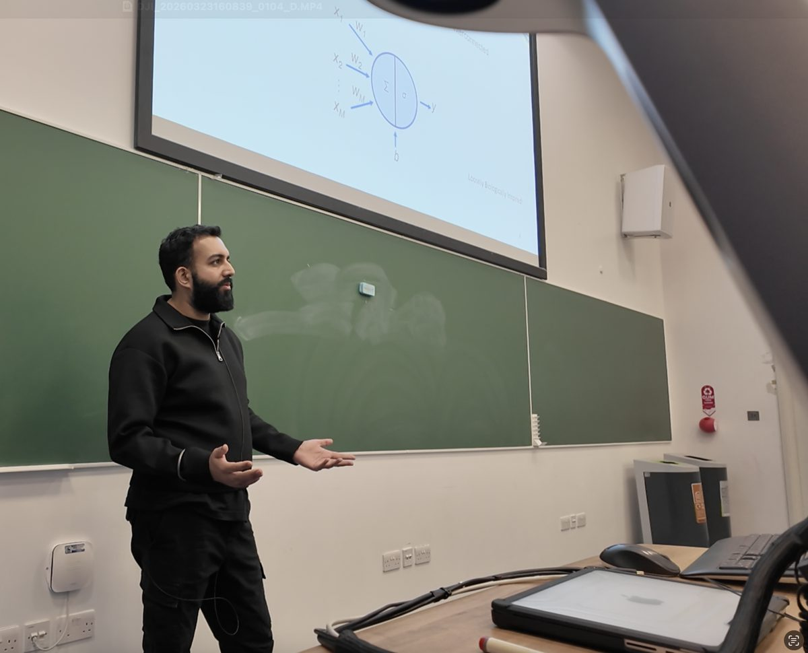
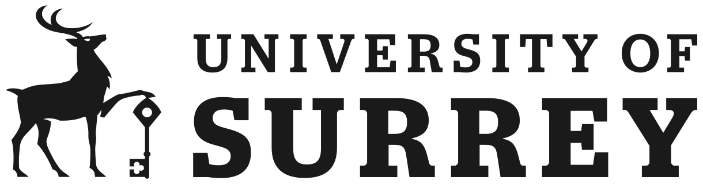
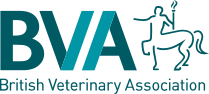

Taran Rai

My background is in applied AI and machine learning, with much of my work spanning animal and human health.
Through the University of Surrey I've worked with Zoetis, Mars Petcare and startups in the vHive Animal Health Incubator. Today my focus is applied AI research, AI safety and evaluation, and open-source models. I also founded LiverSWAT, a national liver health campaign.

- Aviasenze

Through the University of Surrey, its vHive Animal Health Incubator, or directly.
What I work on
Projects through the University of Surrey and vHive, from first scoping to a working model:
- Computer vision for animal detection and behaviour from CCTV
- Acoustic disease detection in poultry
- RAG and LLM applications, including topic modelling and social media listening
- Agentic workflows and LLM-assisted annotation
- LLM evaluation, model validation and benchmarking
- Computational pathology
When should a model decide, and when should a person? In pathology that meant keeping pathologists in the loop with adaptive thresholds. It has since meant uncertainty, evaluation, checking LLM outputs and testing synthetic medical images against real ones.
I now work on research initiatives in AI safety, reliability and evaluation, and spoke on the risks and opportunities at BVA Live's Beyond ChatGPT panel in 2023.
One of my first papers asked whether openly available ImageNet features could work on small histopathology datasets. Open models are now far more capable, and I think they matter well beyond research.
For many industries and enterprises, models you can run on your own infrastructure keep sensitive data in-house, can be inspected and tested, and avoid lock-in to a single provider. Open-source, open-weight and proprietary models each have different trade-offs, and choosing well starts with being clear about which is which.
I founded LiverSWAT after losing my father to liver cancer in 2024. It's a national healthcare campaign under NishkamSWAT for liver disease awareness and prevention, bringing free NHS-delivered FibroScans to underserved communities through events in places of worship and community centres.
We're building an open-source liver health benchmark for AI evaluation with ML researchers, and received an ElevenLabs Impact Program grant to make liver health information available in Panjabi, Hindi and Urdu through AI voice and translation.
Visiting Researcher
Centre for Vision, Speech and Signal Processing (CVSSP), University of Surrey. Applied AI/ML research across human and animal health, including:
- AviasenzeAI research for acoustic monitoring of poultry health.
- AI safetyResearch on AI safety, reliability and evaluation.
- LiverSWATDeveloping an open-source liver health benchmark for AI evaluation.
- Marwell WildlifeResearch support for the ongoing Marwell Zoo project.
Background
My PhD at the University of Surrey used deep learning and computer vision to detect necrosis and mitosis in canine soft-tissue sarcoma biopsies, key steps in grading these tumours. I then worked as a data scientist and AI/ML engineer in Surrey's Centre for Vision, Speech and Signal Processing (CVSSP) on computer vision, audio classification and LLM applications such as RAG, topic modelling and social media listening, through industry partners and vHive startups.
I've guest lectured on neural networks for Surrey's AI and AI Programming module, and I'm a trustee of Alcohol Change UK, the national charity working to reduce alcohol-related harm, especially for vulnerable people.
Charities & community
Selected publications
- 2024
Keeping Pathologists in the Loop and an Adaptive F1-Score Threshold Method for Mitosis Detection in Canine Perivascular Wall Tumours
Cancers 16(3), 644 Human-in-the-loop
Rai T, Morisi A, Bacci B, Bacon NJ, Dark MJ, Aboellail T, Thomas SA, La Ragione RM, Wells K
- 2026
IPATH: A Large-Scale Pathology Image-Text Dataset from Instagram for Vision-Language Model Training
Journal of Imaging Informatics in Medicine, 1-24 Vision-language
Mirhosseini S, Rai T, Diaz-Santana P, La Ragione R, Bacon N, Wells K
- 2024
Evaluating diffusion model generated synthetic histopathology image data against authentic digital pathology images
SPIE Medical Imaging 2024 Evaluation
Rai T, Gola C, Hernández M, Fingerhood S, Marrero J, Diaz-Santana P, Giglia G, Morisi A, Bacci B, Thomas SA, Ressel L, Bacon N, Papachristou N, Cook A, La Ragione R, Wells K
- 2025
Echo chamber: uncovering the public views on ultrasounds via advanced social media listening
SPIE Medical Imaging 2025 LLMs
Rai T, Tarrant G, Wells K
- 2022
Deep Learning for Necrosis Detection Using Canine Perivascular Wall Tumour Whole Slide Images
Scientific Reports 12, 10634 Computational pathology
Rai T, Morisi A, Bacci B, Bacon NJ, Dark MJ, Aboellail T, Thomas SA, Bober M, La Ragione R, Wells K
- 2026
VETCOP: A New Tool for Understanding Pet Owner Topical Steroid Treatment Phobias in the Treatment of Canine Atopic Dermatitis: A Study From China and Singapore
Veterinary Dermatology
Hock S H, Zhang D, Wang F, Chen X, Ye J J, Tang X, Cui Q, Quan X, Li S, Rai T, Wells K
- 2026
Comparative Analysis of Generative and Diffusion Models for Mitosis Synthesis in Histopathology Images
Cureus Journal of Computer Science 3(1)
Alkhadra RB, Diaz-Santana P, Rai T, Wells K
- 2025
Dual Representation Learning in CNNs: Generalised Glycolytic Patterns and Organ-specific Activations
IEEE NSS / MIC / RTSD 2025
John R R, Rai T, Smith R, Robinson A, Prakash V, Shastry M, Strouhal P, Wells K
- 2025
The IPATH dataset: training CLIP models with histopathology-based image-caption pairs from Instagram
SPIE Medical Imaging 2025
Mirhosseini S, Rai T, Diaz-Santana P, La Ragione R, Bacon N, Wells K
- 2023
- 2023
Deep Learning for Necrosis and Mitosis Detection in Canine Soft Tissue Sarcoma Whole Slide Images
PhD Thesis, University of Surrey
Rai T
- 2023
Digital Transformation of Cancer Care in the Era of Big Data, Artificial Intelligence and Data-Driven Interventions: Navigating the Field
Seminars in Oncology Nursing
Papachristou N, Kotronoulos G, Dikaios N, Allison SJ, Eleftherochorinou H, Rai T, Kunz H, Barnaghi P, Miaskowski C, Bamidis PD
- 2023
Detection of Necrosis in Digitised Whole-Slide Images for Better Grading of Canine Soft-Tissue Sarcomas Using Machine-Learning
Veterinary Sciences 10(1), 45
Morisi A, Rai T, Bacon NJ, Thomas SA, Bober M, Wells K, Dark MJ, Aboellail T, Bacci B, La Ragione RM
- 2023
Investigating the Potential of Untrained Convolutional Layers and Pruning in Computational Pathology
SPIE Medical Imaging 2023: Digital and Computational Pathology, Vol. 12471
Rai T, Papanikolaou I, Dave N, Morisi A, Bacci B, Thomas S, La Ragione R, Wells K
- 2019
Can ImageNet Feature Maps Be Applied to Small Histopathological Datasets for the Classification of Breast Cancer Metastatic Tissue in Whole Slide Images?
Proc. SPIE 10956, 109560V
Rai T, Morisi A, Bacci B, Bacon NJ, Thomas S, La Ragione R, Bober M, Wells K
Talks & appearances

- Vet Record
- Jun 2026
Liver health and LiverSWAT, with Rena Dipti Annobil
Radio interview BBC Radio Berkshire
- Sep 2025
LiverSWAT on air with Bobby Friction
Radio interview BBC Radio London
- Feb 2025
Taran Rai: Honouring his father by raising awareness
Feature City St George's Alumni Network
- Dec 2023
The Terminator and veterinary medicine: can they meet outside the world of sci-fi?
Authored article Vet Record
- May 2023
Beyond ChatGPT: harnessing the potential of AI in veterinary medicine
Expert panel BVA Live, Birmingham
- May 2023
Engage 'sceptically' with AI debate, BVA Live delegates told
Media coverage Vet Times
- 24 Aug 2026
Hundreds turn out for community sport event
News coverage BBC News · Neranjana Elapatha
- 08 Jul 2026
Take care of your liver
Community talk Sri Guru Nanak Darbar Gurdwara · via Bhupinder Sandhu on LinkedIn
- 22 Jun 2026
BBC Radio Berkshire with Rena Dipti Annobil
Radio interview BBC Radio Berkshire · With Randeep S Lall
- 29 Sep 2025
BBC Radio London with Bobby Friction
Radio interview BBC Radio London · With Randeep S Lall
- 18 Mar 2025
Raising Awareness for Early Liver Disease Detection
Authored article NishkamSWAT · Taran Rai
- 25 Feb 2025
Taran Rai: Honouring his father by raising awareness
Feature City St George's Alumni Network · Madicken Malm
- 01 Dec 2023
The Terminator and veterinary medicine: can they meet outside the world of sci-fi?
Authored article Vet Record · Taran Rai
- 21 Jul 2023
Are AI-written articles the future?
Media coverage Vet Record · Georgina Mills
- 16 May 2023
Engage 'sceptically' with AI debate, BVA Live delegates told
Media coverage Vet Times · Allister Webb
- 11 May 2023
'Beyond ChatGPT' session on harnessing AI in veterinary medicine at #BVALive
Expert panel @BritishVets on X
- 05 May 2023
Role of Artificial Intelligence in vet medicine to be explored at BVA Live
Expert panel British Veterinary Association
- 2023–24
Introduction to neural networks, AI and AI Programming (EEEM005)
Guest lecture University of Surrey
- 07 Dec 2022
Artificial Intelligence for Necrosis and Mitosis Detection
Presentation University of Surrey
- 09 Sep 2019
Advancing the Veterinary Profession: Supporting Students
Media coverage Zoetis UK press office
- 22 May 2019
ASM Satellite Workshop 2019: Digital Innovation and Data Management
Workshop speaker One Health European Joint Programme
Model Takes
Where I write independently about AI, technology and research. Sometimes other things I find interesting.
- 2026
- 2026
- 2026
- 2024
Get in touch
Always happy to talk about interesting work, collaborations and ideas.
Based in London, UK, and often in Vancouver, Canada. Eligible to work in the UK and Canada.